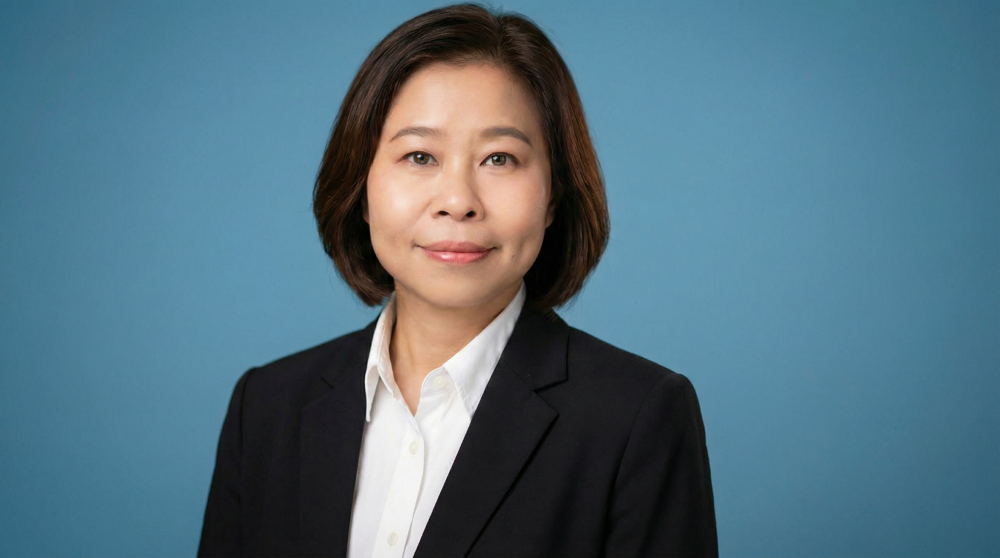

Cost & manufacturing finance professional with 11+ years of experience in food manufacturing. I transform complex data into actionable financial insights to drive performance, improve profitability and support strategic decisions.

I am a results-driven finance professional with strong expertise in cost management, standard costing, variance analysis, inventory & WIP control, budgeting and financial reporting. Skilled in SAP S/4HANA (PP/PI, MM, CO) and Master Data Governance (MDG), Power BI, Advanced Excel, SQL and Python. I partner with cross-functional teams to improve operational efficiency and deliver actionable insights.
Portfolio: wahwahhtwe.github.io
Delivered 5% yield improvement through better process control and cost analysis.
Reduced process waste by 5% resulting in significant annual cost savings.
Developed Power BI dashboards and automated reports to improve visibility and decision making.
Maintained high inventory accuracy and effective stock control across locations.
Developed costing models and margin analysis to support pricing and product profitability decisions.
Designed interactive dashboards for sales, inventory and cost performance with drill-down capabilities.
Implemented cycle count and inventory reconciliation processes to improve stock accuracy and reduce discrepancies.
Maintained and governed master data in SAP MDG to ensure data quality and consistency.
Yadanabon University, Myanmar
2001 – 2003
Mandalay, Myanmar
2009
National University of Singapore
Sep 2024 – Mar 2025
(Power BI, DAX, Python, SQL)